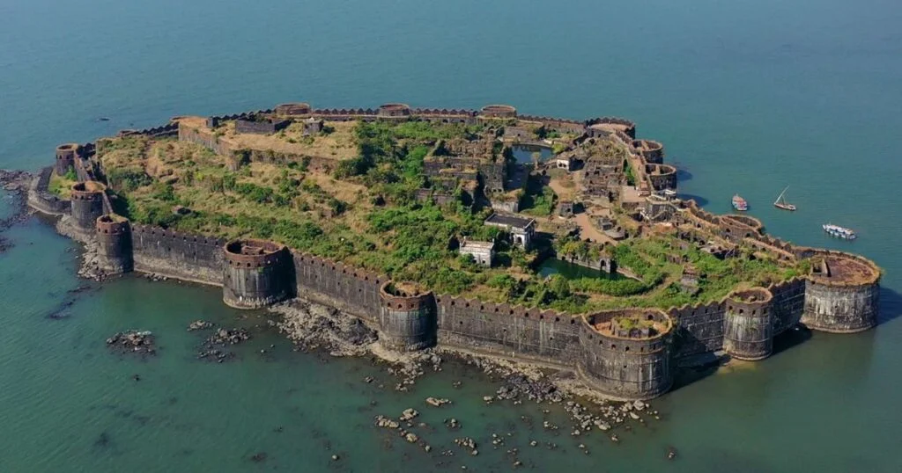
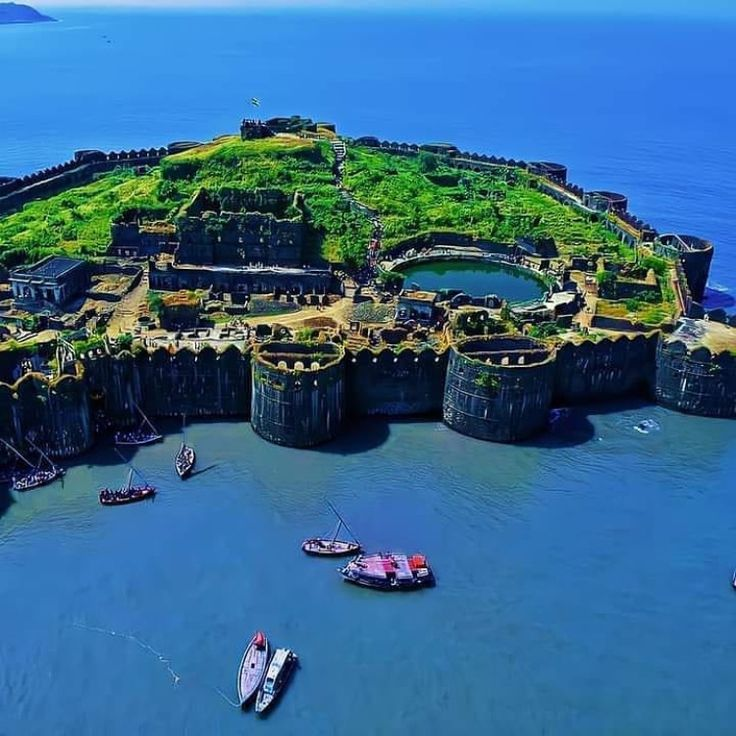
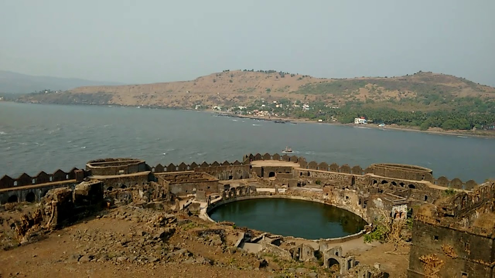
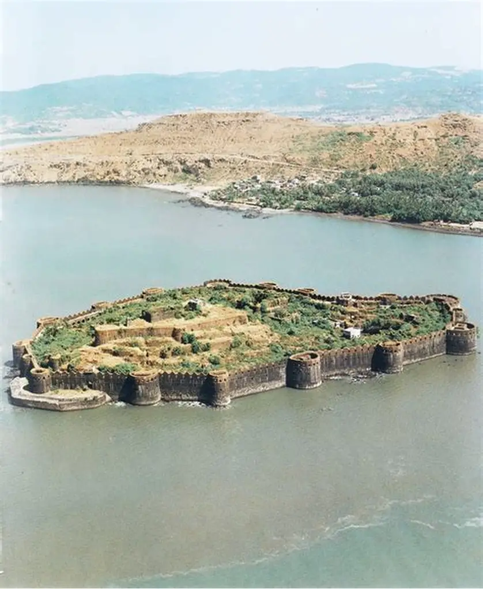

जंजिरा किल्ला रायगड जिल्ह्यातील मुरुड गावाजवळ अरबी समुद्रात वसलेला आहे. हा किल्ला सुमारे 22 एकर क्षेत्रफळात बांधलेला असून त्याची भिंत 40 फूट उंच आहे. ठिकाण: मुरुड, रायगड जिल्हा जवळचे शहर: मुरुड District: रायगड इतिहास: सुरुवातीला हा किल्ला स्थानिक मच्छिमारांनी बांधला. नंतर सिद्दी शासकांनी यावर ताबा घेतला आणि तो मजबूत समुद्री किल्ला बनवला. किल्ला इतका भक्कम होता की अनेक शत्रूंचे हल्ले होऊनही तो कधीही जिंकला गेला नाही. 3. बांधकाम आणि वैशिष्ट्ये: किल्ला सुमारे 22 एकर क्षेत्रफळात पसरलेला आहे. भिंती उंची: सुमारे 40 फूट. आत 19 बुरुज, तोफा, राजमहल, पाण्याची कुंडे आणि मशिद यांसारख्या महत्वाच्या वास्तू आहेत. समुद्राच्या मध्यभागी असूनही येथे ताजे पाणी उपलब्ध आहे, ही त्याची अनोखी वैशिष्ट्ये आहेत. किल्ला पूर्णपणे सागरी संरक्षित किल्ला म्हणून प्रसिद्ध आहे.
किल्ला बांधताना जपलेले क्षण